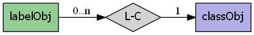
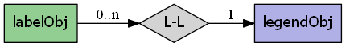
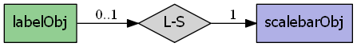

mapscript.labelObj¶
- class mapscript.labelObj¶
The LABEL object
Overview
The labelObj has the following relationships:
  Attributes
alignint See ALIGN
angledouble See ANGLE
anglemodeenum MS_POSITIONS_ENUM One of
AUTOAUTO2, orFOLLOW- see ANGLEautominfeaturesizebufferint Space to reserve around a label (padding) - see BUFFER
colorencodingchar Supported encoding format to be used for labels - see ENCODING
fontchar Name of TrueType font see FONT
forceint Indicates if labels must be drawn - see FORCE
maxlengthint See MAXLENGTH
maxoverlapangledouble See MAXOVERLAPANGLE
maxscaledenomdouble See MAXSCALEDENOM
maxsizeint Maximum height in pixels for scaled labels.
mindistanceint Minimum distance in pixels between duplicate labels - see MINDISTANCE
minfeaturesizeint Minimum feature size (in pixels) to label, features of this size or greater will be labeled - see MINFEATURESIZE
minscaledenomdouble See MINSCALEDENOM
minsizeint Minimum height in pixels - see MINSIZE
numstylesint The number of styles associated with the label
offsetxint Horizontal offset of label - see OFFSET
offsetyint Vertical offset of label - see OFFSET
outlinecolorcolorObjColor of one point outline - see OUTLINECOLORoutlinewidthint See OUTLINEWIDTH
partialsint Indicates if labels can run off the edge of an image, either
MS_TRUEorMS_FALSE(default) - see PARTIALSpositionint See POSTION
priorityint Priority level 1 to
MS_MAX_LABEL_PRIORITY, default=1 - see PRIORITYrefcountint immutable TODO Add documentation
repeatdistanceint See REPEATDISTANCE
shadowcolorcolorObjSee SHADOWCOLORshadowsizexint See SHADOWSIZE
shadowsizeyint See SHADOWSIZE
sizeint Annotation height in pixels - see SIZE
sizeunitsint Supersedes class's sizeunits, defaults to
MS_INHERIT.space_size_10double Cached size of a single space character used for label text alignment of rfc40
thisownThe membership flag
wrapchar See WRAP
Methods
- __init__()[source]¶
Create a new
labelObj. AlabelObjis associated with aclassObjascalebarObjor alegendObj. An instance oflabelObjcan exist outside of aclassObjcontainer and be explicitly inserted into theclassObj:>>> new_label = new labelObj()
>>> the_class.addLabel(new_label)
- convertToString() char[source]¶
Output the
labelObjobject as a Mapfile string. Provides the inverse option forlabelObj.updateFromString().
- getBinding(binding: int) char[source]¶
Get the attribute binding for a specified label property. Returns NULL if there is no binding for this property.
- getStyle(i: int) styleObj[source]¶
Return a reference to the
styleObjat index i in the styles array.
- insertStyle(style: styleObj, index: int = -1) int[source]¶
Insert a copy of style into the styles array at index index. Default is -1, or the end of the array. Returns the index at which the style was inserted.
- removeBinding(binding: int) int[source]¶
Remove the attribute binding for a specified label property.
- removeStyle(index: int) styleObj[source]¶
Remove the styleObj at index from the styles array and return a copy.
- setBinding(binding: int, item: char) int[source]¶
Set the attribute binding for a specified label property. Binding constants look like this:
MS_LABEL_BINDING_[attribute name]:>>> new_label.setBinding(MS_LABEL_BINDING_COLOR, "FIELD_NAME_COLOR")
- updateFromString(snippet: char) int[source]¶
Update a
labelObjfrom a string snippet. ReturnsMS_SUCCESSorMS_FAILURE